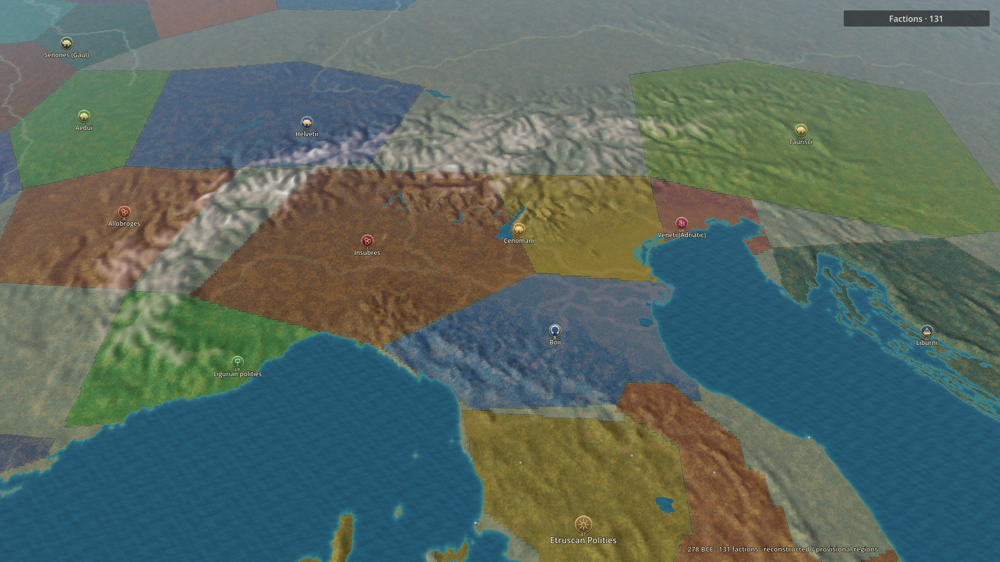
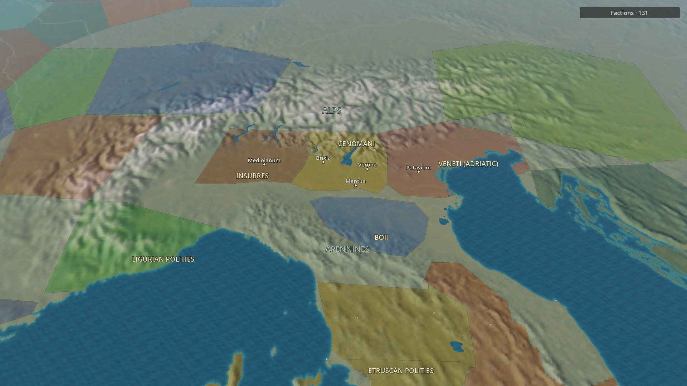
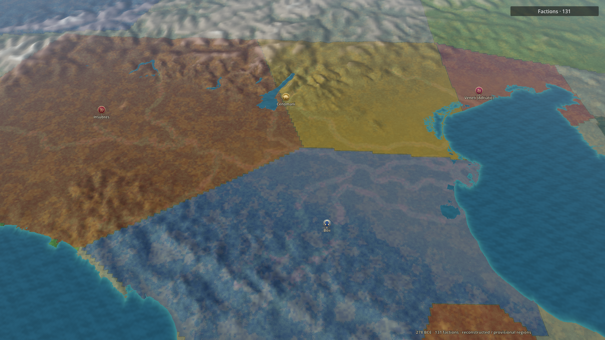
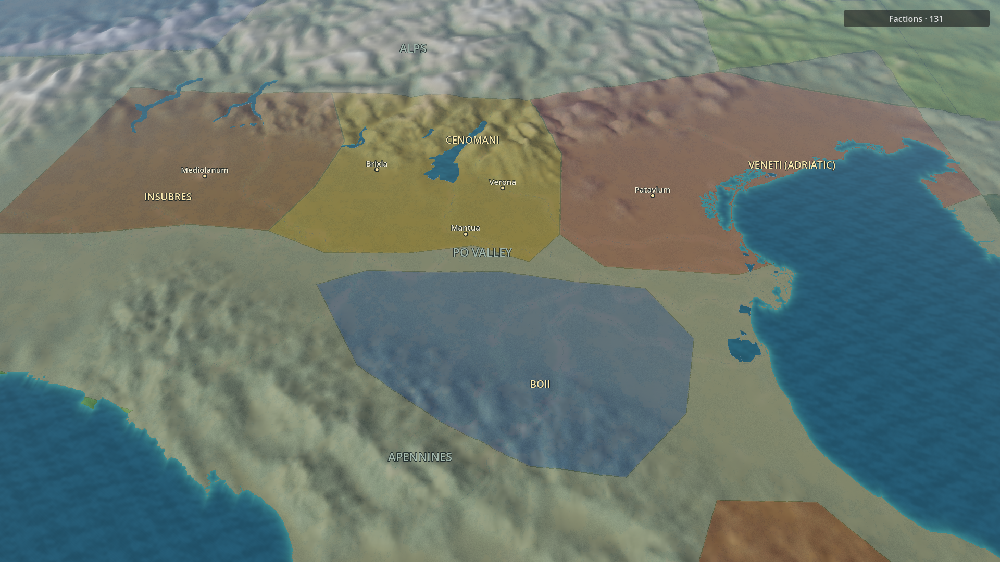
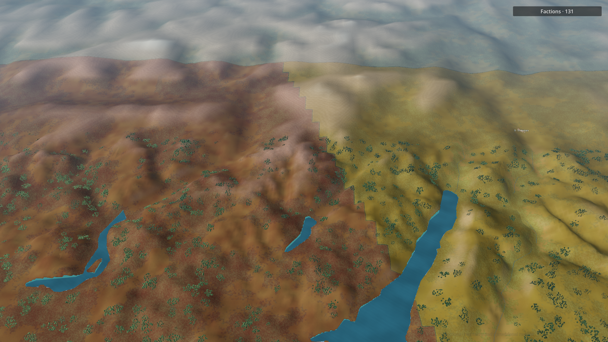
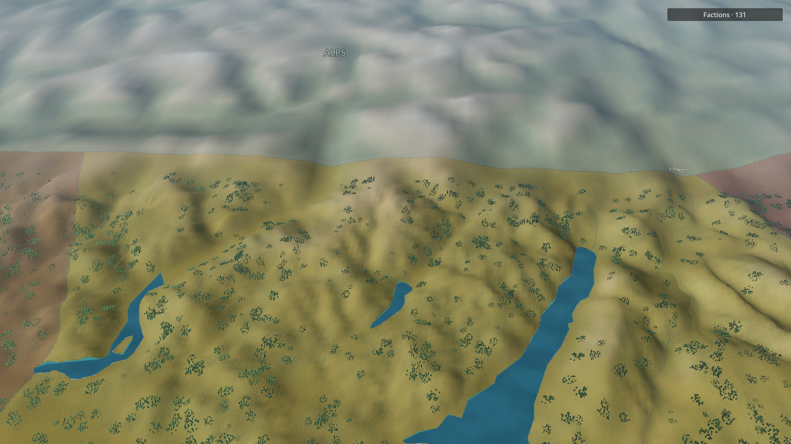

The northern Italy changes now load in the regular Godot campaign. Work proceeds region by region. Before is the previous restrained-color candidate, recaptured at the same three established cameras. After includes provisional territory corrections and regional geometry/shading/label changes.
Historical evidence, confidence, corrections and remaining issues � Scope, source preservation and exact camera checks
Brixia ? Cenomani; Patavium ? Veneti; Bononia retained within the Boii core. Ravenna margins remain unknown. The new boundaries are provisional association envelopes, not surveyed 278 BCE frontiers.






Northern Italy � Po Valley � Alpine terrain
Inspect the corrected faction associations, thinner higher-resolution seams, lake shore/terrain agreement, reduced surface mottling and settlement/faction/region label hierarchy. Mountain and valley normals are preserved. Lake corners use a bounded 60 m reconstruction shared by mask and mesh; this does not supply missing survey detail or ancient water levels.
Remaining: polygonal long source shore segments, coarse mountain mesh relief, sparse river visibility, provisional frontier certainty, label collisions/culling and dense vegetation patterns. These images are review evidence, not a claim of visual completion. 514 existing tests passed; image and historical judgment remain manual.
The original first-pass captures remain available in the before/after folders. Intermediate revision-after captures are retained as diagnostic history; revision-final is the current candidate.